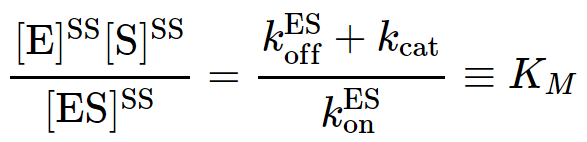

The steady state - when populations, concentrations and spatial distributions are unchanging in time - is one of the most important physical concepts for understanding cell biology. This is not to say that cells are generally in steady states: after all, the cell cycle is a never-ending repeated sequence of changes of from one stage of life to another. In many cases, however, a steady state is a reasonable approximation to a short (enough) window of time in a cellular process, perhaps in a localized region of interest. Think "homeostasis" (but beware of biologists' informal use of the word "equilibrium" which we clarify below). Even if/when a steady state does not hold even approximately, it is still an essential conceptual reference point. You absolutely must understand it.
Two examples of (potential) steady states are sketched above. A table-top waterfall will be in a steady state as water continuously is pumped up from the lower reservoir - to which it returns by gravity. A complex chemical cycle, meant to evoke the citric acid cycle, takes several types of molecules as inputs and catalytically changes them into different output molecules. Note that both examples require the input of energy and/or matter. And neither will be in a steady state if the inputs are removed - or in the transient period after the system is initiated. Other examples, observed over suitable time windows, include motion by motor proteins (which requires constant input of ATP) and active transport (which requires a driving electro/chemical gradient or ATP). Below, we'll look more closely at a Michaelis-Menten process used to model catalytic and biosynthetic processes.
Schematically, a steady state consists of one or more inputs and one or more outputs, with each component unchanging in time.

A more typical (and complex) case includes multiple inputs/outputs and an internal cycle
Let's define a steady state more precisely. We'll restrict ourselves to considering a dsicrete set of states (e.g., chemical and conformational states, possibly of many different types of molecules) simply numbered $i = 1, 2, \ldots$ or $j = 1, 2, \ldots$ with concentrations $[i]$ or $[j]$ which interconvert according to first-order rate constants $k_{ij}$. Then the steady-state condition that every concentration be unchanging in time will be satisfied if, and only if, the flow into a state (i.e., the number of molecules changing into that state) exactly balances the flow out of a state (conversions to other states):
Since the concentrations are steady (unchanging) in time, the time derivative of every derivative will be zero, as we explore further below. Note that spatial derivatives (gradients) need not vanish in a steady state: in a (hypothetically perfectly steady) cell, a molecule could be produced in one region and consumed in another.What's the difference between a steady state and equilibrium? That's a little bit of a trick question because equilibrium is a steady state! Equilibrium is a very special steady state, however, in which the condition (2) is satisfied in a special way - namely, by the stricter condition of detailed balance,
That is, the number of transitions per second from $i$ to $j$ is exactly balanced by reverse transitions. Because this holds for every pair of states in equilibrium, it is said to hold "in detail." Intuitively, it should be clear that if state $i$ experiences equal in and out flow with every other state, then its population/concentration cannot change, and so condition (2) will be satisfied.A standard MM process models conversion of a substrate (S) to a product (P), catalyzed by an enzyme (E) after formation of a bound-but-uncatalyzed complex (ES).

The simple MM model can also be viewed as a cycle because the enzyme E is re-used. Blue arrows indicate steady net flows.

A steady state will occur if P is removed at the same rate as S is added. Mathematically, for steady state, we set the time derivative of the ES complex to zero.
The result yields what looks like a dissociation constant in terms of the steady-state (SS) concentrations:
 (5)
In words, in the steady state, the ratio of concentrations on the left assumes the constant value given by the particular ratio of rate constants in the middle. The effective "equilibrium" constant $K_M$ is conventionally defined but not strictly needed.
The basic steady state result (5) can be used to calculate other quantities of interest, such as the overall rate of product production
now given in terms of the steady-state E and S concentrations, which should be known.All molecular processes are reversible, so any model with a uni-directional arrow is necesarily approximate: see the discussion of cycles. The full MM cycle, allowing for reverse events and permitting only single-step processes, is subjected to a (more complicated) steady-state analysis in an advanced section.